방송통신기사 (2012-10-06 기출문제)
1과목: 디지털 전자회로
1. 다음 회로에서 맥동률을 개선하고자 한다. 가장 관련 있는 것은?
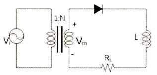
- RL
- N
- Vi
- Vm
(정답률: 52%)

2. 다음 그림의 회로에서 근사적으로 베이스전압 VB를 구하기 위한 부분적인 바이어스 회로이다. VB 의 값을 구하면?
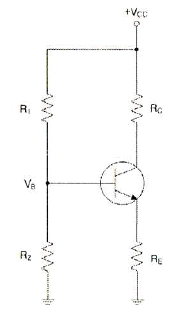
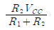
-
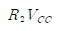
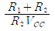
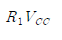
(정답률: 46%)
3. 부궤환 증폭기의 특징에 대한 설명으로 틀린 것은?
- 주파수 대역폭이 증대 된다.
- 이득이 증가한다.
- 주파수 일그러짐이 감소된다.
- 안정도가 향상된다.
(정답률: 31%)
4. 다음 하틀리 발진회로에서 캐패시턴스 C=200[pF], 인덕턴스 L1=180[μH], L2=20[μH]이며, 상호 덕턴스 M=90[μH]의 값을 가질 때 발진주파수는 약 얼마인가?
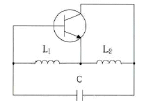
- 517[kHz]
- 537[kHz]
- 557[kHz]
- 577[kHz]
(정답률: 46%)
5. 인가되는 역전압의 직류전압에 의해 캐피시턴스가 가변되는 소자를 이용하여 발진주파수를 가변하는 발진회로는?
- 윈-브리지 발진회로
- 위상천이 발진회로
- 전압제어 발진회로
- 비안정멀티바이브레이터
(정답률: 34%)
6. 다음 중 증폭기의 종류에 해당하지 않는 것은?
- A급 증폭기
- AB급 증폭기
- C급 증폭기
- AC급 증폭기
(정답률: 60%)
7. 진폭변조에서 80[%] 변조하였을 때 상측파대의 전력은 반송파 전력의 몇 [%]인가?
- 16[%]
- 32[%]
- 40[%]
- 48[%]
(정답률: 45%)
8. 슈미트 트리거 회로의 출력 파형은?
- 방형파
- 정현파
- 삼각파
- 램프파
(정답률: 39%)
9. 다음 중 드모르간 법칙에 해당하는 것은?
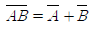
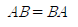
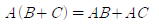
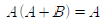
(정답률: 58%)
10. 34710을 BCD(Binary Coded Decimal) 코드로 표시하면?
- 0011 0100 0111
- 0001 0101 0010
- 1010 1010 0110
- 0110 1101 1000
(정답률: 68%)
11. 다음 회로가 수행할 수 있는 논리 기능은?
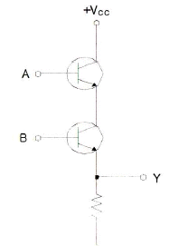
- NOT
- OR
- AND
- XOR
(정답률: 45%)
12. 다음 중 멀티플렉서(multiplexer)의 설명으로 잘못된 것은?
- 멀티플렉서는 전환스위치(selector SW)의 기능을 갖는다.
- N개의 입력 데이터에서 1개 입력씩만 선택하여 단일 통로로 송신하는 것이다.
- 특정한 입력을 몇 개의 코드화된 신호의 조합으로 바꾼다.
- 4×1 멀티플렉서의 경우에는 2개의 선택신호가 필요하다.
(정답률: 31%)
13. n개의 입력으로부터 2진 정보를 2n개의 독자적인 출력으로 변환이 가능한 것은?
- 멀티플렉서
- 디코더
- 계수기
- 비교기
(정답률: 64%)
14. 어떤 정류회로의 맥동률이 1[%]인 정류회로의 출력 직류전압이 400[V]일 때, 이 회로의 리플 전압은 얼마인가?
- 4[V]
- 40[V]
- 20[V]
- 2[V]
(정답률: 54%)
15. 다음 회로에서 R의 용도로 가장 적합한 것은?
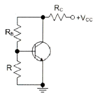
- 전류 부궤환 된다.
- 교류 이득이 증가한다.
- 동작점이 안정화 된다.
- 신호 이득을 방지한다.
(정답률: 45%)
16. 구형파를 발생시키는 발진기는 무엇인가?
- 수정발진기
- 멀티바이브레이터
- 플레이트동조발진기
- 다이네트론발진기
(정답률: 62%)
17. 다음은 디멀티플렉서 회로의 일부분이다. 점선 안에 공통으로 들어갈 게이트는? (단, S0, S1은 선택신호이고 I는 데이터 입력이다.)
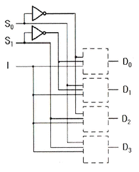
- OR 게이트
- AND 게이트
- XOR 게이트
- NOT 게이트
(정답률: 46%)
18. 다음 중 반가산기의 구성요소로 알맞은 것은?
- 배타적 OR(XOR) 게이트와 AND 게이트
- JK 플립플롭
- 2개의 OR 게이트
- RS 플립플롭과 D 플립플롭
(정답률: 60%)
19. 평활회로의 기능에 대해 바르게 설명한 것은?
- 콘덴서나 인덕터를 통해 파형을 평탄하게 하여 일정한 크기의 전압을 만든다.
- 트랜지스터를 통해 (-)성분을 제거시켜서 평균값을 발생시킨다.
- 제너다이오드를 통해 출력전압을 안정화시켜준다.
- 트랜지스터를 통해 출력전압을 안정화시켜준다.
(정답률: 51%)
20. 다음은 달링턴 회로에서 직류 바이어스 전류 IE를 계산하면 약 얼마인가? (단, IB=2.56[μA], β1=100, β2=100이다.)
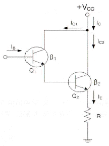
- 2.61[mA]
- 26.1[mA]
- 261[mA]
- 2.61[A]
(정답률: 44%)
2과목: 방송통신 기기
21. VTR 편집과정에서 테이프의 속도로 인해 발생하는 오차를 방지하기 위한 장비는?
- 테이프 오류 교정기(TEC)
- 전자 신호 교정기(ESC)
- 영상 디지털 교정기(DVC)
- 시간 축 교정기(TBC)
(정답률: 71%)
22. 유선방송 전송설비 중 분기기의 설명으로 맞는 것은?
- 입력신호 에너지를 2이상으로 균등하게 분배하는 장치
- 입력신호 에너지를 간선에서 지선으로 불균등하게 분리시키는 장치
- 신호의 전송손실을 보상하기 위하여 사용되는 장치
- 이상 전류 또는 이상 전압의 유입을 제한하거나 차단하는 장치
(정답률: 84%)
23. 광섬유 케이블은 물질 사이에서 일어나는 빛의 어느 성질을 이용한 것인가?
- 전반사
- 회절
- 파동성
- 입자성
(정답률: 80%)
24. 다음 중 유선방송의 전송설비에 속하지 않는 것은?
- 안테나
- 중계장치
- 분배기
- 증폭장치
(정답률: 46%)
25. FM 라디오 방송 88~108[MHz]의 주파수대역에서 주파수 편이량이 72[kHz]일 때 FM 방송의 변조지수는? (단, 신호파 주파수는 4[kHz]를 가정한다.)
- 10
- 15
- 18
- 20
(정답률: 71%)
26. 방송 및 업무용 디지털 오디오장비에 사용되는 대표적인 2채널 직렬 Digital Interface는 무엇인가?
- SDI
- IEEE1394
- AES/EBU
- SDDI
(정답률: 78%)
27. 다음 중 디지털 방송기기로 프레임 싱크로나이저에 대한 설명으로 잘못된 것은?
- 타국 및 국외 중계의 영상신호를 국내의 영상신호와 혼합시 양신호가 동기화되는 장비이다.
- 영상신호를 구하는 방법은 TBC와 동일하나, 프레임 단위의 메모리를 갖는 것은 다르다.
- 프레임 싱크로나이저를 통하면 영상의 최대 1프레임이 지연된다.
- 프레임 싱크로나이저를 통하면 음성도 최대 1프레임이 지연된다.
(정답률: 44%)
28. 비디오 스위처의 기능 중 영상을 전환하는 기능과 관계가 없는 것은?
- 디졸브(Dissolve)
- 훼이드 인(Fade in)
- 컷(Cut)
- 프리뷰(Preview)
(정답률: 65%)
29. 다음 중 위성 방송 수신 시스템의 주요 부분과 가장 거리가 먼 것은?
- 안테나
- 저잡음 변환기(LNB)
- 위성 방송 수신기
- 트랜스폰더(Transponder)
(정답률: 60%)
30. 위성 통신의 다원접속방식 중 다수의 사용자에게 일정한 시간 간격으로 방송 통화로를 제공하는 방식은?
- FDMA(Frequency Division Multiple Access)
- TDMA(Time Division Multiple Access)
- CDMA(Code Division Multiple Access)
- SDMA(Space Division Multiple Access)
(정답률: 75%)
31. 인터넷방송 프로그램을 제작하고 송출하는 인터넷방송국과 함께 인터넷 방송에 관련된 서비스로서 맞지 않은 것은?
- 콘텐츠 제공 서비스 : 공중파 방송국, 라디오 방송국, 스트리밍 호스트 등
- 콘텐스 제작 서비스 : 인터넷방송 콘텐스 제작전문
- 인터넷방송 기술 서비스 : 인터넷방송 인프라구축, 스트리밍 솔루션 제공
- 인터넷방송 연결 서비스 : 인터넷 서비스 제공자, 멀티캐스팅 등
(정답률: 69%)
32. 공동주택의 수신설비에 대한 분류와 활용 장비가 맞는 것은?
- 안테나 수신점 설비는 세대분배기함, MATV 분배기 또는 CATV 분배기, 직렬단자, 직렬단자선로 등이 있다.
- 헤드앤드 설비는 분리기, 자동이득조정증폭기, 아날로그 신호처리기, 디지털 신호처리기 등이 있다.
- 공동구 간선설비는 각 채널별 수신안테나, 안테나신호 인입 전송선로, 보호기, 대역통과여파기, 전치증폭기 등이 있다.
- 세대인입설비는 MATV 간선증폭기 또는 CATV 간선증폭기, 전송선로설비, 동축커넥터 등이 있다.
(정답률: 65%)
33. 인터넷 비즈니스를 위한 모델의 설명으로 맞지 않는 것은?
- B2C : 비즈니스의 대상을 일반 소비자로 한다.
- B2B : 기업 간의 영리를 목적으로 한다.
- C2C : 일반 소비자간의 상업 행위를 목적으로 한다.
- O2C : 공공단체와 기업 간의 정보 교류를 한다.
(정답률: 74%)
34. 위성 DMB와 지상파 DMB에 모두 적용된 동영상 압축규격으로 MPEG-2보다 압축효율이 2배 이상 뛰어나고 국제표준화기구(ISO) 산하 동영상 전문가그룹 MPGE과 국제전기통신연합(ITU)의 전기통신 표준화 부문(ITU-T)에서 승인한 동영상 압축규격은?
- MPEG-4 BIFS
- H.264
- MPEG-4 BSAC
- AAC
(정답률: 54%)
35. 다음 중 홀로그래피에 대한 설명으로 틀린 것은?
- 지각원리(Preception)에 근거하지 않고 물리적인 법칙에 근거한 어지러움 없는 시청 환경의 3D 표현장치이다.
- 시점의 제한 없이 실제로 사람이 보고 느끼는 영상과 유사한 정보를 제공한다.
- 기존 영상기술을 획기적으로 대체할 수 있는 기술이다.
- 전반사 기술을 이용하여 좌우의 눈에 서로 다른 영상을 투영하는 기술이다.
(정답률: 68%)
36. TV 송신기의 기준 신호 레벨 Es=1[Vrms]이고 AM Noise Level En=0.01[Vrms]와 같을 때, AMNoise Ratio는 얼마인가?
- -10[dB]
- -20[dB]
- -30[dB]
- -40[dB]
(정답률: 71%)
37. 방송용 송신기에서 증폭기의 입력 전력이 3[mW], 출력 전력이 3[W]일 때 전력이득은?
- 60[dB]
- 40[dB]
- 30[dB]
- 10[dB]
(정답률: 70%)
38. 다음 중 벡터스코프에서 확인할 수 없는 것은?
- 크로미넌스 레벨
- 블랙 밸런스
- 휘도 레벨
- 화이트 밸런스
(정답률: 59%)
39. 다음 중 스튜디오에서 사용되는 제작 설비가 아닌 것은?
- VTR
- FSS
- CG
- STL
(정답률: 76%)
40. 두 개 또는 그 이상의 정보신호를 하나의 신호로 만든 후 동시에 전송하는 것을 무엇이라고 하는 가?
- 양자화
- 부호화
- 고속화
- 다중화
(정답률: 74%)
3과목: 방송미디어 공학
41. 다음 중 우리나라와 북한의 아날로그 지상파 TV 방식이 순서대로 옳은 것은?
- NTSC, NTSC
- NTSC, PAL
- NTSC, SECAM
- PAL, PAL
(정답률: 72%)
42. 다음 중 일반적인 프로그램의 편성 개념과 거리가 가장 먼 것은?
- 프로그램의 제작
- 프로그램의 시간
- 프로그램의 선택
- 프로그램의 배치
(정답률: 71%)
43. 다음 중 방송환경의 변화추세로 가장 알맞은 것은?
- Broadcasting→Narrowcasting→Personalcasting
- Broadcasting→Personalcasting→Narrowcasting
- Narrowcasting→Broadcasting→Personalcasting
- Personalcasting→Broadcasting→Narrowcasting
(정답률: 61%)
44. 다음 중 민영방송사의 주요 재원에 해당되는 것은?
- 조세
- 시청료
- 광고료
- 등록세
(정답률: 77%)
45. 에어컨을 가동하기 전에 실내 음압레벨이 65[dB]이고 에어컨을 가동할 때의 실내 음압레벨이 72[dB]라면 에어컨 자체의 음압레벨에 가장 가까운 값은?
- 6[dB]
- 7[dB]
- 66[dB]
- 71[dB]
(정답률: 77%)
46. 다음 중 대기의 온도가 15[℃]인 경우, 음속은 약 얼마인가?
- 340[m/sec]
- 380[m/sec]
- 420[m/sec]
- 570[m/sec]
(정답률: 61%)
47. 아날로그방송 화질과 유사한 디지털방송의 표준은 무엇인가?
- SDTV
- NTSC
- PAL
- HDTV
(정답률: 63%)
48. 다음 조명 용어 중 주로 피사체에 생기는 그림자를 없애거나 그림자 영역에 조명을 부여하여 화면의 콘트라스트(contrast)를 줄이기 위한 조명을 지칭하는 용어로 가장 적절한 것은?
- 백 라이트(back light)
- 필 라이트(fill light)
- 베이스 라이트(base light)
- 키 라이트(key light)
(정답률: 55%)
49. 다음 중 방송의 조명의 목적에 대한 설명으로 옳지 않은 것은?
- 카메라가 정상적으로 작동할 수 있는 최소한의 광량을 확보해야 한다.
- 삼차원적인 원근감, 즉 깊이를 창조하여 입체감을 살릴 수 있어야 한다.
- 조명은 궁극적으로 시청자에게 감동을 제공해 주어야 하기 때문에 전체 장면의 미적구성은 중요하지 않다.
- 화면 내의 특정한 부분을 돋보이게 하거나 약화시켜야 한다.
(정답률: 86%)
50. 다음 중 소리의 요소인 음조(Pitch)에 관한 설명으로 옳은 것은?
- 진동체에 의하여 진동된 음파의 진폭의 대소를 말한다.
- 진동체에 의하여 진동된 1초간의 진동수의 대소를 말한다.
- 음의 맵시로 파형의 형태를 말한다.
- 공기의 소밀파로 매질의 진동방향과 파동이 나가는 방향과 일치하는 파를 말한다.
(정답률: 77%)
51. 다음 중 일반적인 방송용 아날로그 무선 마이크 시스템에 관한 설명으로 틀린 것은?
- 무선 마이크는 자유로이 움직일 수 있는 편리함 때문에 많이 사용한다.
- 무선 마이크는 간단한 AM 송신기 회로가 내장되어 있는 일종의 송신기이다.
- 송신 주파수대는 VHF 혹은 UHF 대역을 사용한다.
- 무선 마이크가 전파를 발상하면 이를 가까운 곳에 있는 수신기로 수신하여 음성신호 출력을 뽑아내는 방법을 사용한다.
(정답률: 70%)
52. 다음 중 인쇄 미디어인 신문의 특성과 가장 거리가 먼 것은?
- 휴대성
- 즉시성
- 가독성
- 정기성
(정답률: 80%)
53. 디지털 오디오 파일의 크기를 결정짓는 요소가 아닌 것은?
- 양자화 비트수
- 시간
- 샘플링 레이트
- 음색
(정답률: 86%)
54. 양자화기의 비트수(N)가 증가할 때마다 부호화에 따르는 양자화 오차는 몇 [dB]씩 감소되는가?
- 2[dB]
- 3[dB]
- 4[dB]
- 6[dB]
(정답률: 56%)
55. 오디오 신호데이터를 생성하는 방법과 가장관련이 적은 것은?
- PCM 방식을 이용한 A/D, D/A 변환기를 이용한다.
- JPEG 방법을 이용한다.
- MIDI(Musical Instrument Digital Interface)를 이용한다.
- 신디사이저(Synthesizer)를 이용하여 음원합성한다.
(정답률: 80%)
56. 다음 중 화질과 음질과 관련하여, Sampling 주파수 및 양자화 비트의 관련사항으로 틀린 것은?
- Sampling 주파수가 높을수록 고역주파수의 재생이 가능하다.
- 초상권보호를 위해 자주 사용하는 모자이크 화면은 양자화 비트 수를 매우 낮게 설정하여 만든다.
- 양자화 비트수를 늘릴수록 양자화 스텝폭이 줄어들어서 화질과 음질이 개선된다.
- 보통 영상신호가 음성신호보다 대역폭이 넓어서 영상신호의 양자화 비트수를 음성신호의 양자화 비트수보다 높게 취한다.
(정답률: 47%)
57. 아날로그 신호를 6비트의 디지털 신호로 변환하고자 할 때 표현 가능한 디지털 정보는 최대 몇 개인가?
- 16
- 32
- 64
- 128
(정답률: 72%)
58. 음향신호에서 2[V]와 10[V]의 레벨[dB]차는 약 얼마인가?
- 8[dB]
- 14[dB]
- 18[dB]
- 22[dB]
(정답률: 75%)
59. 다음 중 NTSC 방식에서 색신호인 I신호 EI와 Q신호 EQ의 대역폭으로 올바른 것은?
- EI : 1.2[MHz], EQ : 0.2[MHz]
- EI : 1.3[MHz], EQ : 0.3[MHz]
- EI : 1.4[MHz], EQ : 0.4[MHz]
- EI : 1.5[MHz], EQ : 0.5[MHz]
(정답률: 62%)
60. 다음 중 색의 3요소로 적합한 것은?
- 밝기, 크기, 색조
- 밝기, 채도, 크기
- 조도, 채도, 색조
- 밝기, 채도, 색조
(정답률: 78%)
4과목: 방송통신 시스템
61. 다음과 같은 조건에서 전체 전송량은 얼마인가?
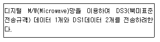
- 44.736[Mbps]
- 46.286[Mbps]
- 49.368[Mbps]
- 47.824[Mbps]
(정답률: 44%)
62. 다음 중 10[kHz] 대역에서 16 QAM 변조방식을 사용하여 전송할 수 있는 데이터의 최대 전송속도는?
- 10[kbps]
- 20[kbps]
- 40[kbps]
- 80[kbps]
(정답률: 72%)
63. 다음 중 방송통신망에 속하지 않는 것은?
- 근거리통신망
- 위성망
- 패킷라디오망
- 회선교환망
(정답률: 68%)
64. 슈퍼헤테로다인 수신기의 중간주파수가 455[kHz] 일 때 수신된 400[kHz]에 대한 영상주파수는?
- 855[kHz]
- 1,210[kHz]
- 1,225[kHz]
- 1,310[kHz]
(정답률: 67%)
65. 526.5[kHz]~1,606.5[kHz]대의 중파방송(AM)은 총 몇 개의 채널을 할당할 수 있는가?
- 180개
- 120개
- 54개
- 36개
(정답률: 82%)
66. 다음 중 표준화된 지상파 멀티미디어 방송(DMB)의 오디오 규격에 해당하는 것은?
- [MPEG-4 Part10 AVC] (H.264)
- [MPEG-4 Part3 BSAC]
- [MPEG-4 SL+ MPEG-2 TS]
- [MPEG-4 BIFS]
(정답률: 60%)
67. 다음 지상파 TV 채널 중 FM 방송 대역과 가장 인접한 채널은?
- CH 6
- CH 7
- CH 9
- CH 11
(정답률: 65%)
68. TV 제작 system에서 영상 신호의 기준 신호를 공급하는 장비는?
- TBC(Time Base Corrector)
- EDL(Edit Decision List)
- STL(Studio to Transmitter Link)
- Sync generator
(정답률: 68%)
69. 다음 중 TV 송신시스템의 주요 구성요소가 아닌 것은?
- 급전계통
- 모니터시스템
- 송신장비
- 송신안테나 계통
(정답률: 82%)
70. 다음 중 CATV 센터계 설비인 헤드엔드의 기능에 해당하지 않는 것은?
- 수신 설비로부터 입력된 신호의 채널변환
- 다수의 주파수 분할된 신호 분리 및 혼합기능
- 전송로에 신호를 송출하는 기능
- 도청방지를 위한 비화신호의 해독기능
(정답률: 67%)
71. 아날로그 CATV에 비해 디지털 CATV의 특징이 아닌 것은?
- 고품질 방송이 가능하고 수신품질이 우수하다.
- 주파수 효율이 좋다.
- 데이터 방송서비스를 이용할 수 있다.
- 양방향 서비스가 불가능하다.
(정답률: 80%)
72. 다음 중 우리나라의 디지털 위성방송 시스템에 사용하는 시스템 다중화 방식으로 옳은 것은?
- MPEG1
- JPEG
- MPEG4
- MPEG2
(정답률: 56%)
73. 지상파 DMB 방송의 오디오 전용 압축부호화 형식인 ISO/IEC 11172-3(MPEG-1 Audio Layer II) 또는 ISO/IEC 13818-3(MPEG-2 Audio Layer II)를 따르는 경우 그 기술기준에 해당되지 않은 것은?
- 오디오 서비스의 최대 비트율은 912[kbps]로 할 것
- 오디오 부호화기로부터 출력되는 신호의 최소 비트율은 112[kbps]로 할 것
- 오디오 부호화기로부터 음성신호의 표본화 주파수는 최대 49,000[Hz]로 할 것
- 보조 데이터 신호는 “지상파 디지털멀티미디어방송 송수신 정합 표준” 및 “지상파 디지털멀티미디어방송 데이터 송수신 정합 표준”에서 규정하는 형식을 따를 것
(정답률: 58%)
74. 상호 직교성을 갖는 다수 반송파를 이용하여 신호를 변조하고 다중화하는 전송 방식을 무엇이라 하는가?
- CDMA
- ATSC
- OFDM
- FM
(정답률: 65%)
75. 다음 비디오 신호 측정에 사용되는 멀티버스트 신호로 측정할 수 있는 것은?
- 주파수대 잡음 측정
- 주파수대 진폭 측정
- 비직선 왜곡 측정
- 과도 잡음 측정
(정답률: 45%)
76. 다음 중 케이블의 이도가 커질 경우 장점이라고할 수 없는 것은?
- 장력이 크게 된다.
- 미풍에 의한 진동이 적어진다.
- 케이블 설계가 용이하다.
- 안전율이 증가한다.
(정답률: 52%)
77. 방송시설 설치시 옥외형 광 송ㆍ수신장치(ONU)의 설치 후 측정하는 개별시험이 아닌 것은?
- 광원 파장 시험
- RF 조정 및 시험
- 광수신 감도 측정
- 전송로 특성 시험
(정답률: 42%)
78. CATV 시스템에 사용하는 증폭기가 아닌 것은?
- 간선증폭기
- 분기증폭기
- 연장증폭기
- 회선증폭기
(정답률: 70%)
79. 다음 중 위성방송을 지상에서 수신시 단위면적을 통과하는 전자파의 전력선 밀도 P는 약 얼마인가? (단, 전계세기 E는 197[V/m]이다.)
- 197[dBW/m2]
- 153[dBW/m2]
- 136[dBW/m2]
- 103[dBW/m2]
(정답률: 71%)
80. 다음 중 위성통신의 장ㆍ단점을 나타낸 것으로 틀린 것은?
- 서비스 지역의 광역성
- 동보성
- 다원접속성
- 통신망 설정의 지연성
(정답률: 74%)
5과목: 전자계산기 일반 및 방송설비기준
81. 운영체제의 발달 순서를 올바르게 표시한 것은?
- 일괄처리→다중프로그램→대화식처리→분산처리
- 다중프로그램→분산처리→일괄처리→대화식처리
- 일괄처리→다중프로그램→분산처리→대화식처리
- 다중프로그램→분산처리→대화식처리→일괄처리
(정답률: 52%)
82. 산술 결과 값이 오버플로가 일어났을 때 제어의 흐름이 계속되지 않고 고정된 기억위치로 스위치되어 오버플로에 대한 적절한 처리를 하도록 하는 경우를 무엇이라고 하는가?
- 서브루틴
- 분기
- 인터럽트
- 트랩
(정답률: 48%)
83. 키는 릴레이션의 투플을 유일하게 식별할 수 있는 속성의 집합이다. 데이터베이스에서 사용되는 키에 대한 설명으로 옳지 않은 것은?
- 후보 키(Candidate Key)는 유일성과 최소성을 만족하는 키이다.
- 수퍼 키(Super Key)는 유일성은 있으나 최소성은 없는 키이다.
- 외래 키(Foreign Key)는 어느 한 릴레이션의 속성의 집합이 다른 릴레이션에서 기본 키로 이용되는 것이다.
- 보조 키(Secondary Key)는 후보 키가 여러 개일 경우 그 중 하나를 선정하여 사용하는 것이다.
(정답률: 46%)
84. 프로그램이 수행되는 도중에 인터럽트가 발생되면 현재 사이클의 일을 끝내고 프로그램이 수행할 수 있도록 현재 상태를 보관하는 장소의 위치와 관계 있는 것은?
- 상태 레지스터
- 프로그램 레지스터
- 스택 포인터
- 인덱스 레지스터
(정답률: 52%)
85. 다음 중 광자기디스크(CD, DVD 등)의 장점이 아닌 것은?
- 저장 용량이 크다.
- 대량 복제가 용이하다.
- 이동과 보관이 용이하다.
- 액세스 속도가 하드 디스크보다 빠르다.
(정답률: 54%)
86. 인터넷과 같은 공중 네트워크를 마치 전용 회선처럼 사용하여 사설 네트워크에서 요구하는 서비 스를 제공하는 기술 및 네트워크를 말하는 것은?
- VPN
- ISDN
- VAN
- PSDN
(정답률: 67%)
87. 주기억장치의 용량을 보다 크게 사용하기 위하여 대용량 보조기억장치인 디스크장치의 용량을 주기억장치와 같이 사용할 수 있도록 하는 장치는?
- 가상기억장치(Virtual Memory)
- 연관기억장치(Associative Memory)
- 캐시 메모리(Cache Memory)
- 보조기억장치(Auxiliary Memory)
(정답률: 65%)
88. 입ㆍ출력 인터럽트(I/O Interrupt)의 특성에 속하지 않는 것은?
- 입출력이 준비된 상태를 나타낼 때까지 루프하에 머무르게 되어 시간을 낭비하게 되는데 인터럽 기능으로 해결한다.
- 필요할 때 입출력 장치가 중앙처리장치의 서비스를 요구한다.
- 외부 인터럽트이다.
- 정상적인 프로그램에서는 수행할 수 없으며 운영체제에 의해서만 운영할 수 있다.
(정답률: 67%)
89. 여러 개의 작은 디스크들을 배열 구조로 연결하고 하나의 유닛으로 패키지를 구성함으로써 액세스 속도를 크게 향상시키고 신뢰도를 높인 스토리지 기술은?
- SCSI
- NAS
- RAID
- SAN
(정답률: 71%)
90. 다음 중 링형 구조의 LAN에 대한 설명과 관계없는 것은?
- 노드의 추가와 변경이 비교적 어렵다.
- 한 노드의 고장시 전체 시스템에 영향을 미친다.
- 트래픽이 일정한 시스템에 적합하다.
- 이더넷(Ethernet)이 대표적인 형태이다.
(정답률: 60%)
91. 종합유선방송(아날로그신호)에서 전송선로시설의 질적 수준의 측정 항목과 기준값에 대한 설명으 로 틀린 것은?
- 영상반송파의 레벨 안정도 : 3[dB] 이내(1분간)
- 비인접사용 채널간 영상반송파의 레벨차 : 10[dB] 이내
- 영상반송파대 잡음비(C/N비) : 36[dB] 이상(주파수 대역 4[MHz] 기준)
- 혼변조도 : -50[dB] 이하
(정답률: 55%)
92. 다음 중 구내 전송선로설비의 설치 방법으로 틀린 것은?
- 보호기는 원칙적으로 인입구 부근의 옥외에 설치하고 접지하여야 한다.
- 분기기는 임피던스의 변화없이 신호를 분기할 수 있어야 한다.
- 분배기는 임피던스의 변화없이 신호를 분재할 수 있어야 한다.
- 유휴 분기 단자는 50[Ω]으로 종단하여야 한다.
(정답률: 49%)
93. 다음 중 방송국의 개설조건과 관련이 없는 것은?
- 방송국을 개설하려는 자는 다른 방송의 수신에 혼신을 일으키지 아니하도록 설치하여야 한다.
- 혼신을 방지하기 위한 방송국의 설치장소 등 방송국의 개설조건에 관하여 필요한 사항은 대통령령으로 정한다.
- 방송통신위원회는 방송국을 개설하려는 자의 허가신청내용이 개설조건에 적합하지 아니하면 설치장소의 이전 등 보완을 명할 수 있다.
- 송신공중선의 높이 출력, 지향특성 등 방송국의 개설조건에 관하여 필요한 사항은 교육과학기술부가 정한다.
(정답률: 54%)
94. 종합유선방송국 시설기준 등 구내전송 설비에 해당되지 않는 것은?
- 분기기 및 분배기
- 증폭기
- 보호기
- 변조기
(정답률: 45%)
95. 다음 중 정보통신기술자의 범위에 있어서 등급의 종류가 아닌 것은?
- 특급기술자
- 고급기술자
- 중급기술자
- 저급기술자
(정답률: 64%)
96. “방송사항의 제작ㆍ편성 및 조정에 필요한 설비와 그 종사자의 총체”를 무엇이라 하는가?
- 송신소
- 연주설비
- 연주소
- 제작설비
(정답률: 55%)
97. 유선방송국의 “수신설비”에 대한 설명으로 가장 적합한 것은?
- 입력신호 에너지를 간선에서 지선으로 불균등하게 분리시키는 장치를 말한다.
- 유선방송을 수신하기 위하여 수신자가 구내에 설치하는 선로, 관로, 증폭기 등을 말한다.
- 유선방송을 수신하기 위한 분배기 및 분기기 등을 말한다.
- 유선방송국에서 텔레비전 방송신호를 수신하기 위한 수신 안테나, 케이블 및 증폭장치 등을 말한다.
(정답률: 56%)
98. 방송법의 목적이 아닌 것은?
- 방송의 자유와 독립 보장
- 방송의 공적 책임을 높임
- 시청자의 권익보호와 민주적 여론 형성
- 방송의 발전과 방송사의 복리 증진
(정답률: 53%)
99. 다음 중 방송사업자 또는 중계유선방송사업자가 지체없이 방송통신위원회에 신고해야 할 변경사항으로 관계없는 것은?
- 직원 정원의 변경사항
- 대표자의 변경사항
- 법인 또는 상호명의 변경사항
- 주된 사무소의 소재지 변경사항
(정답률: 69%)
100. 종합유선방송국이 사용해야 할 영상신호의 기저대역 주파수는?
- 4.2[MHz] 범위 안
- 4.2[kHz] 범위 안
- 5.75[MHz] 범위 안
- 5.75[kHz] 범위 안
(정답률: 46%)
이유는 RL 회로는 저항과 인덕턴스로 구성되어 있어서, 전류의 변화에 대한 반응이 느리기 때문에 맥동률을 개선할 수 있다. 즉, RL 회로를 추가하면 전류의 변화가 더욱 부드러워져서 맥동률이 개선된다.
나머지 보기인 "N", "Vi", "Vm"은 회로의 특성과는 관련이 없는 요소들이다.